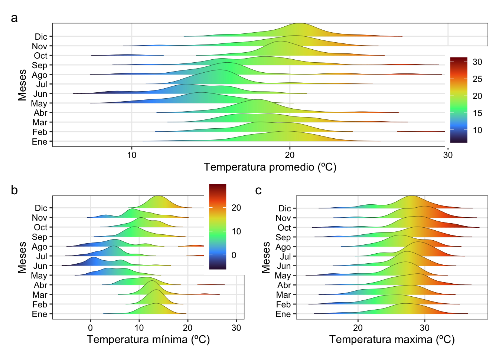
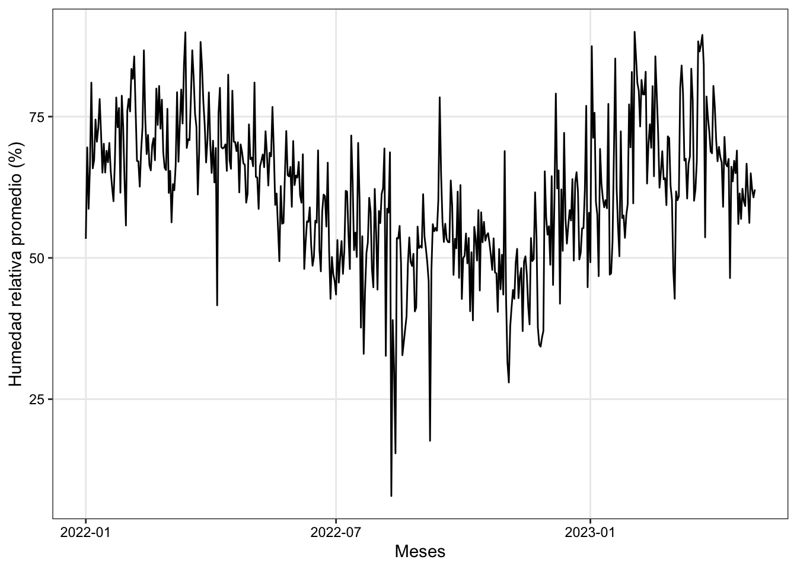
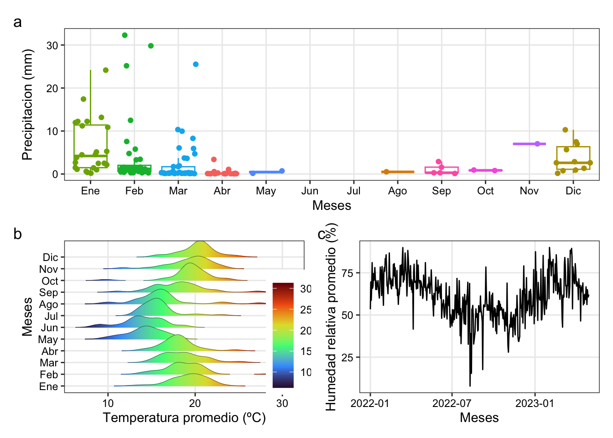

![]()
library(readxl)
df <- read_excel("/Users/franklin/Documents/R/myblog/posts/weather_mizque/dato_diarios.xlsx")Data
analisis de temperatura
#Real data Mizque
library(metan)Registered S3 method overwritten by 'GGally':
method from
+.gg ggplot2|=========================================================|| Multi-Environment Trial Analysis (metan) v1.18.0 || Author: Tiago Olivoto || Type 'citation('metan')' to know how to cite metan || Type 'vignette('metan_start')' for a short tutorial || Visit 'https://bit.ly/pkgmetan' for a complete tutorial ||=========================================================|inspect(df, 2:14, plot = F)# A tibble: 13 × 10
Variable Class Missing Levels Valid_n Min Median Max Outlier Text
<chr> <chr> <chr> <chr> <int> <dbl> <dbl> <dbl> <dbl> <chr>
1 "mes" nume… No - 485 1 5 12 0 <NA>
2 "dia" nume… No - 485 1 16 31 0 <NA>
3 "estacion" char… No 0 485 NA NA NA NA "Lin…
4 "longitud" nume… No - 485 -65.4 -65.4 -65.4 0 <NA>
5 "latitud" nume… No - 485 -18.0 -18.0 -18.0 0 <NA>
6 "altura" nume… No - 485 2055 2055 2055 0 <NA>
7 "Precipitaci… char… No 0 485 NA NA NA NA "Lin…
8 "\"Temperatu… char… No 0 485 NA NA NA NA "Lin…
9 "\"Temperatu… char… No 0 485 NA NA NA NA "Lin…
10 "\"Temperatu… char… No 0 485 NA NA NA NA "Lin…
11 "\"Humedad R… char… No 0 485 NA NA NA NA "Lin…
12 "\"Humedad R… char… No 0 485 NA NA NA NA "Lin…
13 "\"Humedad R… char… No 0 485 NA NA NA NA "Lin…Warning: Considering the levels of factors, .data should have 1 rows, but it
has 485. Use 'as_factor()' for coercing a variable to a factor.Warning: Expected three or more factor variables. The data has only 0.Warning: Possible text fragments in variable(s) estacion, Precipitación,
"Temperatura Máxima", "Temperatura Mínima", "Temperatura Media", "Humedad
Relativa Máxima", "Humedad Relativa Mínima", "Humedad Relativa Media".library(tidyverse)── Attaching core tidyverse packages ──────────────────────── tidyverse 2.0.0 ──
✔ dplyr 1.1.2 ✔ readr 2.1.4
✔ forcats 1.0.0 ✔ stringr 1.5.0
✔ ggplot2 3.4.2 ✔ tibble 3.2.1
✔ lubridate 1.9.2 ✔ tidyr 1.3.0
✔ purrr 1.0.1 ── Conflicts ────────────────────────────────────────── tidyverse_conflicts() ──
✖ forcats::as_factor() masks metan::as_factor()
✖ tibble::column_to_rownames() masks metan::column_to_rownames()
✖ dplyr::filter() masks stats::filter()
✖ dplyr::lag() masks stats::lag()
✖ dplyr::recode_factor() masks metan::recode_factor()
✖ tibble::remove_rownames() masks metan::remove_rownames()
✖ tidyr::replace_na() masks metan::replace_na()
✖ tibble::rownames_to_column() masks metan::rownames_to_column()
ℹ Use the conflicted package (<http://conflicted.r-lib.org/>) to force all conflicts to become errorsnames(df) [1] "gestion" "mes"
[3] "dia" "estacion"
[5] "longitud" "latitud"
[7] "altura" "Precipitación"
[9] "\"Temperatura Máxima\"" "\"Temperatura Mínima\""
[11] "\"Temperatura Media\"" "\"Humedad Relativa Máxima\""
[13] "\"Humedad Relativa Mínima\"" "\"Humedad Relativa Media\"" Rename variables
newvar = c(PP = "Precipitación",
Tmax = "\"Temperatura Máxima\"",
Tmin = "\"Temperatura Mínima\"",
Tmean = "\"Temperatura Media\"",
HRmax = "\"Humedad Relativa Máxima\"",
HRmin = "\"Humedad Relativa Mínima\"",
HRmean = "\"Humedad Relativa Media\"")db = df%>%
rename(any_of(newvar))%>%
select(c(1,2,3, 8:14))%>%
mutate_if(is.character, as.numeric)%>%
mutate(mes = as.factor(mes),
gestion = as.factor(gestion))%>%
mutate(mes=recode(mes,
'1'='Ene',
'2'='Feb',
'3'='Mar',
'4'='Abr',
'5'='May',
'6'='Jun',
'7'='Jul',
'8'='Ago',
'9'='Sep',
'10'='Oct',
'11'='Nov',
'12'='Dic'))
db # A tibble: 485 × 10
gestion mes dia PP Tmax Tmin Tmean HRmax HRmin HRmean
<fct> <fct> <dbl> <dbl> <dbl> <dbl> <dbl> <dbl> <dbl> <dbl>
1 2022 Ene 1 0.4 31.4 9.92 20.6 93.2 19.3 53.4
2 2022 Ene 2 0 33.3 11.7 19.7 96.6 18.0 69.6
3 2022 Ene 3 5.1 29.6 14.4 21.0 88.7 27.2 58.7
4 2022 Ene 4 0 30.1 14.1 20.1 90.8 23.6 66.3
5 2022 Ene 5 1.5 21.9 13.4 16.7 94.6 47.8 81.0
6 2022 Ene 6 4.5 25.5 14.4 19.8 94.3 35.9 65.8
7 2022 Ene 7 0 27.3 14.7 20.4 95.6 39.9 67.3
8 2022 Ene 8 24.2 25.3 15.3 19.0 91.3 49.6 74.5
9 2022 Ene 9 0 26.9 15.5 20.2 92.7 38.5 70.6
10 2022 Ene 10 0 24 14.5 18.5 91.9 47.2 73.0
# ℹ 475 more rowsplot temperature
library(ggridges)
my_theme <-
theme_bw() +
theme(legend.title = element_blank(),
axis.title = element_text(color = "black"),
axis.text = element_text(color = "black"),
panel.grid.minor = element_blank())
p1 = ggplot(
data = db,
aes(x = `Tmean`,
y = `mes`,
fill = after_stat(x))
) +
geom_density_ridges_gradient(scale = 1.5, size = 0.1,
rel_min_height = 0.001) +
scale_fill_viridis_c(name = "Temp (ºC)",
direction = 1, option = "H") +
my_theme +
theme(legend.position = c(0.95, 0.4))+
labs(x="Temperatura promedio (ºC)", y = "Meses")
p2 = ggplot(
data = db,
aes(x = `Tmin`,
y = `mes`,
fill = after_stat(x))
) +
geom_density_ridges_gradient(scale = 1.5, size = 0.1,
rel_min_height = 0.001) +
scale_fill_viridis_c(name = "Temp (ºC)",
direction = 1, option = "H")+
my_theme+
theme(legend.position = c(0.9, 0.77))+
labs(x="Temperatura mínima (ºC)", y = "Meses")
p3 = ggplot(
data = db,
aes(x = `Tmax`,
y = `mes`,
fill = after_stat(x))
) +
geom_density_ridges_gradient(scale = 1.5, size = 0.1,
rel_min_height = 0.001) +
scale_fill_viridis_c(name = "Temp (ºC)",
direction = 1, option = "H") +
my_theme+
theme(legend.position = "")+
labs(x="Temperatura maxima (ºC)", y = "Meses")
arrange_ggplot((p1),
(p2+p3),
nrow = 2,
tag_levels = "a")Picking joint bandwidth of 0.801Picking joint bandwidth of 1.11Picking joint bandwidth of 1.2
plot precipitation
pp =db%>%
mutate(PP = na_if(PP, 0.0))%>%
ggplot(aes(x = mes,y = PP,
colour = mes
)) +
geom_boxplot(outlier.shape = NA)+
geom_jitter()+
my_theme+
theme(legend.position = "")+
labs(x="Meses", y = "Precipitacion (mm)")Humedad relativa plot
fechas = df%>%
rename(any_of(newvar))%>%
select(c(1,2,3, 8:14))%>%
mutate_if(is.character, as.numeric)%>%
mutate(fecha = make_datetime(gestion,mes,dia))%>%
select(fecha,HRmin,HRmax, HRmean)
fechas# A tibble: 485 × 4
fecha HRmin HRmax HRmean
<dttm> <dbl> <dbl> <dbl>
1 2022-01-01 00:00:00 19.3 93.2 53.4
2 2022-01-02 00:00:00 18.0 96.6 69.6
3 2022-01-03 00:00:00 27.2 88.7 58.7
4 2022-01-04 00:00:00 23.6 90.8 66.3
5 2022-01-05 00:00:00 47.8 94.6 81.0
6 2022-01-06 00:00:00 35.9 94.3 65.8
7 2022-01-07 00:00:00 39.9 95.6 67.3
8 2022-01-08 00:00:00 49.6 91.3 74.5
9 2022-01-09 00:00:00 38.5 92.7 70.6
10 2022-01-10 00:00:00 47.2 91.9 73.0
# ℹ 475 more rowsHR = fechas%>%
ggplot(aes(x=fecha, y=HRmean))+
geom_line()+
my_theme+
labs(x="Meses", y = "Humedad relativa promedio (%)")
HR
library(plotly)
p = fechas%>%
plot_ly(x=~fecha, y=~HRmean)%>%
add_lines()
parrange_ggplot((pp),
(p1+HR),
nrow = 2,
tag_levels = "a")Warning: Removed 342 rows containing non-finite values (`stat_boxplot()`).Warning: Removed 342 rows containing missing values (`geom_point()`).Picking joint bandwidth of 0.801
Citation
BibTeX citation:
@online{santos2023,
author = {Santos, Franklin},
title = {Analisis de Datos Climaticos},
date = {2023-06-25},
url = {https://franklinsantosm.com/posts/weather_mizque},
langid = {en}
}
For attribution, please cite this work as:
Santos, Franklin. 2023. “Analisis de Datos Climaticos.”
June 25, 2023. https://franklinsantosm.com/posts/weather_mizque.